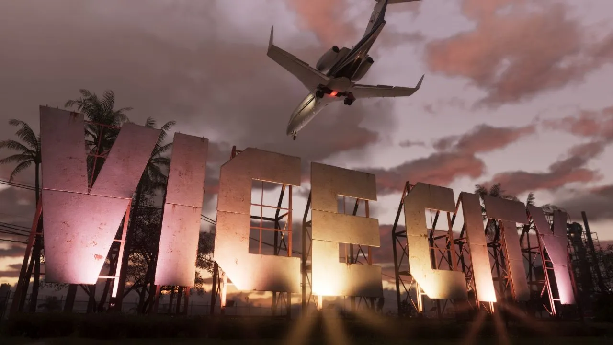
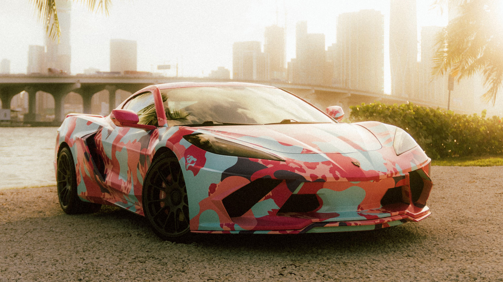
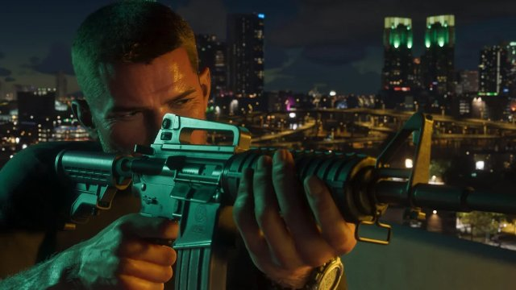

ЛЕОНИДА · ВАЙС-СИТИ · ТВОЯ ИСТОРИЯ
GRAND
THEFT AUTOVISTART
Твой путеводитель по Grand Theft Auto VI.
ЧТО ТАКОЕ START
Меньше поисков.
Больше игры.
Найти нужное место. Выбрать машину. Разобраться с заданием. Start собирает мир GTA VI в понятный справочник, к которому удобно возвращаться прямо во время игры.
На карте можно отмечать найденное и оставлять свои заметки. В каталогах — искать транспорт и оружие, сравнивать карточки и сохранять избранное. В разделе миссий будут появляться проверенные прохождения, а калькулятор уже показывает время запуска для выбранного региона.

Леонида
на ладони
192 места. Фильтры, личные точки и заметки — на одной интерактивной карте.

Твоя следующая
машина
317 моделей: найди, сравни и сохрани в избранное.

Знай свой
арсенал
51 карточка оружия с фото, категориями и прототипами.

У каждой истории
есть начало
Миссии по порядку. Сейчас доступна карточка пролога; пошаговые прохождения добавим после проверки.
ЕЩЁ В СПРАВОЧНИКЕ
Всё остальное —
тоже под рукой.
Впервые в GTA?
Мир, герои и ответы на первые вопросы
Время в твоём регионе
Страна, часовой пояс и точный пересчёт
Личный прогресс
Собственные цели сохраняются в браузере
Джейсон и Люсия
Главные герои без сюжетных спойлеров
Музыка Леониды
Список станций добавим после подтверждения
Что нового в Start
История обновлений базы и сайта